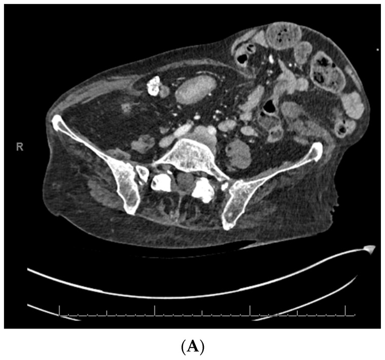

Ficha del catálogo
Hernias de la pared abdominal
- Sistema
- Digestivo
- Modalidad
- TC
- Región
- Pared abdominal
- Dificultad
- Intermedio
Son protrusiones de contenido abdominal a través de defectos de la pared, que pueden ser congénitos o adquiridos. Las más frecuentes son la umbilical, la epigástrica por la línea alba, la incisional sobre una cicatriz quirúrgica, la de la línea semilunar y las lumbares. Su relevancia clínica depende del tamaño del defecto, del contenido y de la existencia de complicaciones.
Técnica
La tomografía con medio de contraste intravenoso es el estudio más completo porque muestra el defecto, su contenido, el estado de las asas y las lesiones asociadas. Cuando se busca una hernia poco evidente puede realizarse el estudio con maniobra de Valsalva o en decúbito prono, y el ultrasonido dinámico es una alternativa útil en defectos superficiales.
Qué observar
- Localización y tamaño del defecto aponeurótico, medido en su diámetro mayor
- Contenido del saco, que puede ser grasa preperitoneal, epiplón, intestino delgado o colon
- Reductibilidad aparente y grado de desplazamiento del contenido fuera de la cavidad
- Signos de obstrucción, con asas dilatadas proximales y punto de transición en el cuello del saco
- Signos de sufrimiento del asa herniada, como engrosamiento parietal, falta de realce y neumatosis
- Trabeculación de la grasa dentro del saco y líquido libre en su interior
Hallazgos
Se identifica una solución de continuidad en la aponeurosis con protrusión de contenido a través de ella. La hernia de la línea semilunar merece atención especial porque se sitúa en el borde lateral del músculo recto y con frecuencia queda entre las capas musculares, sin abombamiento visible en la exploración, lo que la hace fácil de pasar por alto. La hernia incisional aparece sobre una cicatriz y puede ser múltiple. Cuando existe estrangulación el asa muestra pared engrosada, realce disminuido o ausente, grasa mesentérica inflamada dentro del saco y líquido en el interior, con dilatación proximal y colapso distal.
Perlas
Lo que más condiciona la urgencia no es el tamaño de la hernia sino la estrechez del cuello, porque un anillo pequeño con contenido intestinal es el escenario clásico de la estrangulación. En el informe conviene indicar siempre el diámetro del defecto y el contenido, ya que ambos datos orientan la técnica de reparación. Ante una hernia grande y de larga evolución se describe la pérdida de domicilio, que anticipa dificultades para reintroducir el contenido en la cavidad.
Diagnóstico diferencial
- Diástasis de los músculos rectos
- Separación de los rectos con línea alba intacta y adelgazada, sin defecto aponeurótico ni saco.
- Hematoma de la vaina del recto
- Colección hiperdensa dentro del músculo con antecedente de esfuerzo o anticoagulación, sin comunicación con la cavidad.
- Tumor de partes blandas de la pared
- Masa sólida con realce propio, sin cuello ni contenido de origen abdominal.
- Absceso de la pared abdominal
- Colección con realce periférico y signos inflamatorios, a menudo sobre una herida quirúrgica.
- Eventración por parálisis de la pared
- Abombamiento difuso con musculatura adelgazada pero continua, sin defecto verdadero.
Simuladores
- Grasa preperitoneal prominente en el ombligo sin defecto aponeurótico
- Abombamiento fisiológico de la pared en decúbito supino sin protrusión de contenido
- Material protésico o de sutura previo que distorsiona la anatomía de la pared
Por modalidad
- TC
- Es el método más completo, define el defecto, el contenido y las complicaciones y ayuda a planear la reparación
- US
- Aporta la valoración dinámica en tiempo real de los defectos superficiales, con Valsalva y en bipedestación
- RM
- Se usa de forma selectiva en pacientes jóvenes o cuando se quiere evitar radiación en estudios repetidos
Protocolo
Tomografía abdominopélvica con medio de contraste intravenoso en fase portal a los 70 segundos, con cortes finos y reconstrucciones coronales y sagitales que muestren el defecto en su eje mayor. Cuando se busca una hernia intermitente puede repetirse una adquisición con maniobra de Valsalva o en decúbito prono. En la urgencia se revisa el realce de la pared del asa herniada.
Clasificación
Errores frecuentes
- Pasar por alto una hernia de la línea semilunar por buscar solo abombamientos evidentes de la pared
- No medir el defecto aponeurótico, dato que orienta la técnica quirúrgica
- Informar la hernia sin valorar el realce de la pared del asa y perder una estrangulación incipiente

hernia de pared abdominal hernia incisional hernia umbilical linea semilunar estrangulacion tomografia pared abdominal